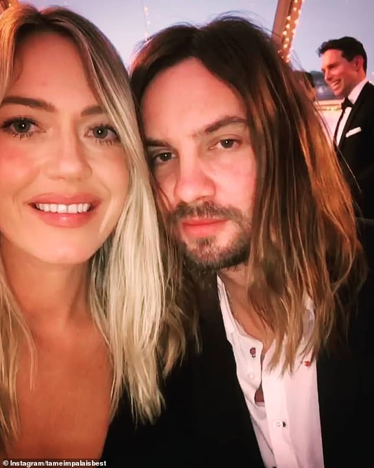
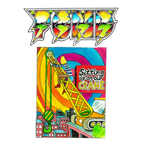

A B-oldal és Demók
Utószóként még röviden megemlíteném a B-oldal számait és a demókat, elmondanék néhány érdekességet.
1. Beverly Laurel
Egy Los Angeles-i hotelről van elnevezve, de sok köze nincs hozzá. A dob ezen a számon egy alap Ableton Live plugin, az Impulse egyik alapbeállitása, a "Vintage Funky Good Time". Kevin sok számán alapból „preset”-eket használ, de itt annyire működött, hogy bennehagyta végleges számban. Ez a szám zeneileg inkább a következő albumára hasonlit, a „Currents”-re; nincs benne gitár, csak szintetizátor. Viszont a produkciójában teljesen egy Lonerism időszak béli szám. A dalszövegben arról énekel, hogy mások nem tudják mi jó neki. Ez kicsit a „Solitude is Bliss”-re emlékeztet.
2. Led Zeppelin
Elég összezavaró szám, hisz az egykori egyik legnagyobb rock zenekarról, Led Zeppelinről van elnevezve. John Bonham dobolása nagy inspiráció volt Kevin számára. Kevin azt nyilatkozta, hogy a számot azért igy nevezte el, mert a groove amit kitalált kísértetiesen hasonlított egy Led Zeppelin számra. Ennek ellenére csak a gitár riffben található hasonlóság. Maga a gitár effekt már jobban hajaz a Led Zeppelin-re, kevésbé a Lonerism-re. Ez a dal Apple Music, illetve bakelit lemez exkluzív. A dalszöveg arról szól, hogy a dal énje küzd a megértésért. Végül senki sem érti meg őt, még a szakemberek sem- „Több pszichiáter sem tudta kihúzni belőlem”.
3. Feldolgozások
A B-oldalon szereplnek feldolgozások, eközött Todd Rundgren, az albumot inspriáló személy is, aki az Elephant-ot dolgozta fel.
4. Demók
• Track 1: Egy egyszerű szintetizátoros bevezető, semmi több.
• Track 2, „Am I Gonna’ Die Waiting Around?”
Ez egy majdnem teljesen kész szám, hossza majdnem 2 perc. Elég repetitív, de volt benne potenciál. A dalszöveg sem túl komplex, „Meg fogok halni a várakozásban?”, tehát a dal énje fájdalmasan el akarja mondani a lánynak, hogy szereti, visszatartja magát és úgy érzi, hogy meg fog halni.
• Track 3, „Apocalypse Dreams” Demó
Az Apocalypse Dreams-t eredetileg Jay Watson-nal együtt írta Kevin, ez egy ilyen demó lehet. Hallatszódik benne egy női hang, akcentusa alapján nem Melody. Inkább Sophie Lawrence Parker  hangjára hasonlít, aki Kevin későbbi barátnője, mára felesége. Ez érdekes, mert ekkor még Melody-val volt együtt. Kérdez valamit a lány, amire Kevin válasza, hogy „csak felvétel készítek”. Úgy hangzik, mint ha a basszust venné fel, de ezt nem tudom megerősíteni a felvétel milyensége és minősége miatt. Hallatszódik még egy-két köhögés, majd megemlíti a nő Alexandro Jodorowsky „The Holy Mountain ” cimű filmjét. A háttérben emellett úgy hangzik, hogy a többiek ebédelnek.
• Track 4, „Wait There”
Viszonylag egy elég befejezetlen szám, zeneileg és dalszövegben ez is elég szimpla maradt. „Várj rám ott reggel, ha hallanám, hogy hívsz.”, szól a szöveg. A dal énje már rutinosan tudja, hogy hol szokott állni a lány, és reméli, hogy egy nap majd odahívja őt is. Epedezik érte, rajong érte, de féli megközelíteni, tőle várja az első lépést. Témában elég jól beleillik az albumba. Hasonló perkussziót használt, mint ami később Currents B-sideján megtalálható „Taxi’s Here”-ben szerepel.
• Track 5, „Feels Like We Only Go Backwards” Demó:
Egy egyszerű, akusztikus gitáron játszott demó. Érdekesen, ehhez a számhoz több demó is megjelent, valószínűleg azért, mert ötlet hirtelen pattant a fejébe a „Walk In The Park” meghallgatása után, és kapkodott feljegyezni.
• Track 6, „Everything Comes And Goes”
Ez egy zeneileg befejezett szám, de a szöveg kicsit nonszenszikális, látszik, hogy demó. Kevin ezt gyakran csinálja, általában értelmetlenül énekel, majd később találja ki a szöveget. A „Let It Happen” végén például nem tette ezt, a szöveget máig nem lehet pontosan tudni. Lényegében ez a dal is a változásról szól, az alapján, amit összetudtam tenni. A dob hasonlít Kevin a „Miguel – Waves” remixében levő dobolására.
• Track 7, „Retina Show”
Ez később megjelent, mint teljes szám. Nem egy túl különleges dal, és az albumba sem igazán illik bele sehol. Emellett valamennyire a Tame Impala volt tagjaiból alapult zenekar, a Pond „Sitting Up On Our Crane ” cimű számára hasonlít.
• Track 8, „Elephant” Demó:
Innerspeaker, vagy még korábbi demó az Elephant-ról. Még inkábban koszosabb, garázs rockosabb hangzású. Az énekhang szinte alig hallható, ez elég negativ.
• Track 9, „If You Want Me To Show You” /„Love Is Cruel”
Még egy olyan szám, amelyben megvolt a potenciál, hogy albumra méltó legyen, és maga az ötlet, mind zeneileg, mind szövegben jó volt. A szöveg arról szól, hogy a narrátor megmondja a lánynak „Ha akarod, hogy megmutassam, / Milyen boldogok is lehetnénk, / bolondan”. Tehát a dal énje felajánlja a vak szerelmet, a boldogságot. Ezután úgy folytatja, hogy „Oly meglepettnek tűntél, / hogy elárult a szerelem, / de a szerelem kegyetlen”. Azaz a lány valószínűleg most ment keresztül egy elég kemény szakitáson. Majd jön a narrátor, a csillogó páncélú lovag, aki beakarja tölteni a lyukat a szerelmi életében a lánynak, kissé mint a „Mind Mischief”-ben. Ezen a számon az Ableton Live alap reverb pluginja elég erősen szerepel, tehát látszik, hogy még korai fázisaiban volt a szám.
• Track 10, „I Want It To Be”:
Ez a szám később a „NTHHSFHBAWCC”-ban fel lett használva, mivel egy részen a szintetizátor teljesen megegyezik azzal, ami ebben szerepel. A szövegben a narrátor arról beszél, hogy ő olyan akar lenni, amilyen ő sohasem lehet, alias extroveltált, vagy egyszerűen olyan ember, mint amilyen a lánynak bejön. Ezután megkéri őt, hogy mondja meg neki, mert lehet, hogy „pont erre van szüksége”. Nem tudjuk meg mit mondjon meg, de valószínűleg azt akarja, hogy a lány elutasítsa. Ha ezt megtenné, akkor tovább lephetne, nem lenne rajta ez a nagy nyomás, hogy megváltozzon.
• Track 11, „Everything Has Changed”:
Ez a dal valószinúleg feleségéről, és volt középiskolai szerelméről, Sophie-ról szól. Arról énekel, hogy „mindig oly messze van”, legyen ez fizikai vagy szerelmi távolság. Ezután próbálja magát nyugtatni, hogy „tudom, csak ma van így”, tehát ez a vágyakozás el fog múlni. Majd úgy folyatja, hogy „Miért? Minden megváltozott. Kérlek, minden megváltozott”. Kevin egyetemre ment, középiskola után nem találkozott a lánnyal, majd befutott, Párizsba költözött. Minden megváltozott, de ennek ellenére nem képes elfelejteni. Mikor visszaköltözik Perthbe, újra találkozik a Sophie-val, de ekkor már nem próbál meg megfelelni neki, önmaga marad. Később összejöttek, összeházasodtak (Kevin 150db McDonald’s hamburgert rendelt esküvőjükre) és már úton van második gyermekük.
• Track 12 „Endors Toi” Demó:
Elég antiklimaktikus befejezés, ez egy demó az Endors Toi-ről, dúdolva, akusztikus gitáron. Ez a szám eredetileg az Innerspeaker-re keszűlt, az Innerspeaker Demo albumon szereplő verzió sokkal jobb, mint ez.
• Sidetracked Soundtrack:
Eredetileg nem szerepelt a demó albumon, de 2023-ban kiadta, mint teljes szám. Kissé betekintést nyerhetünk abba, hogy Kevin hogyan is csinálta ezt az albumot, főként a nyers hangzás, a hosszú instrumentális szekció miatt. Igazán érdekes, repetitív, torzított dobok szerepelnek ezen a számon. Kissé emlékeztet a „Crystallized”-ra a Melody’s Echo Chamber-től.
A gitáron nincs túl sok vad effekt, de a riff elég fülbemászó és még egy kis munkával ez a szám beillett volna az albumba. A szövegben a dal énje meglepődik azon, hogy kedvese visszatért hozzá. Tudja, hogy nem bánt elég jól vele, és nem érti miért szánta meg, tért vissza. A narrátor kitárja neki magát, elmondja, hogy nem tud egyedül maradni, függ ettől a kapcsolattól, függ a lány szerelmétől. Azután elmagyarázza, hogy nem tudja mi a néhány- tehát túl sokat vett el a kapcsolatból. Esetleg túlságosan tapadós volt, nem hagyott a lánynak időt a magánéletére. Ezt követően megkéri a szerelmét, hogy idő van, menjen oda hozzá és mondja el neki mit gondol mielőtt beleőrül a gondolataiba. Majd azzal zárja, hogy nyár lehetne, visszaemlékezve egy szabadabb időre, amikor a szerelmen kívül máson nem aggódtak. A szám végén Kevin hangja pszichedelikusan össze van vágva, majd egy dobszólóval végződik. A szám végére egy elég szép, nosztalgikus képet fest fel egy párról, akár egy ausztrál tengerparton, akik az egész nyarat azzal töltik, hogy mélyen szerelmesek egymásba, nem törődve a világ gondjaival.